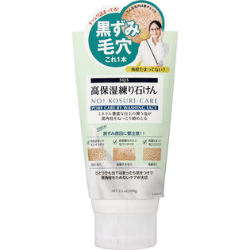

返回列表
产品名称：SQS 高保湿練り石けん

石澤研究所 SQS 高保湿練り石けん １００ｇ
メーカー 石澤研究所
JANコード 4992440032214
商品の特徴
黒ずみ 毛穴 これ1本
- 成分・分量
- 水、ミリスチン酸、ケイ酸Al、パルミチン酸、水酸化K、BG、酸化チタン、ステアリン酸、グリセリン、黒砂糖、パーム核脂肪酸アミドDEA、ヒアルロン酸Na、加水分解コラーゲン、テトラヘキシルデカン酸アスコルビル、ヘチマエキス、グリチルリチン酸2K、ラウロイルメチルアラニンNa、ラウリン酸、カプリリルグリコール
- 用法及び用量
- 約1.5cmくらいの長さを手に取り、あわ立てます。あわ立てネットを使うと、より固い泡が作れます。優しく洗います。すすぎ残しがないようにしっかり洗い流します。お肌に合わないときはご使用をおやめください。